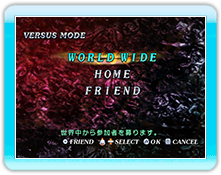
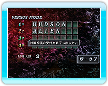
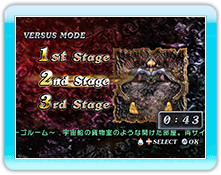
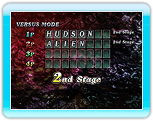
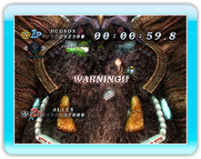
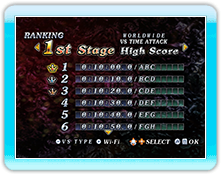

13 |
VERSUS MODE |
 |
|
ニンテンドーWi-Fiコネクションを利用して、遠く離れたプレーヤーと、通信対戦をして楽しむことができるモードです。モードを選択すると自動でニンテンドーWi-Fiコネクションに接続します。

● WORLD WIDE ● HOME ● FRIEND
対戦形式を決定したら、一緒に遊ぶ人たちを募ります。この時、自分以外に参加してくれる人が現れなければ、ゲームは中止となり通信が切断されます。
また、対戦相手受付中に
ゲームの参加者が集まったら、対戦するステージを決めます。各プレイヤーが３種類のステージから選択し、多数決で決定します。
※もし同数だった場合はランダムで決定されます。 ※ボスステージは選択できません。
ステージが決まったら、全員一斉にゲームスタートです。ルールの条件に当てはまった人から、クリアすることができます。クリアした人はその時点でランキングを確認できます。
対戦は｢タイムアタック｣形式で行います。参加者の中で、誰が一番早く規定得点（一千万点）に到達するかを競います。
ランキングは、ローカルランキングでは自分の記録のベスト１～30位までを表示します。通信対戦の結果、１位になった時に限り、そのタイムをニンテンドーWi-Fiコネクションランキングに登録することができます。ニンテンドーWi-Fiコネクションランキングに登録した際、自分の順位とその周辺の30人分の記録を閲覧することができます。
|
 |
 |
 |